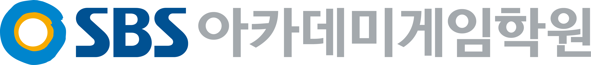

콘솔 텍스트 게임
턴제 전투나 텍스트 던전. 클래스로 캐릭터·몬스터,
vector로 인벤토리면 1~4단계 확인
SFML·SDL 2D 게임
창을 띄우고 키 입력으로 스프라이트를 움직이는
벽돌 깨기·슈팅. 게임 루프를 직접 짜요
언리얼 C++ 클래스 한 개
공식 퀵스타트대로 Actor를 상속해
Tick에서 떠서 도는 큐브 하나
세 번째까지 되면 신입 공고가 요구하는
"C++로 만든 결과물"이 생겨요.
출처: 언리얼 5.8 C++ Quick Start·SFML 3.0 튜토리얼 (2026.11.05 확인)

대전점